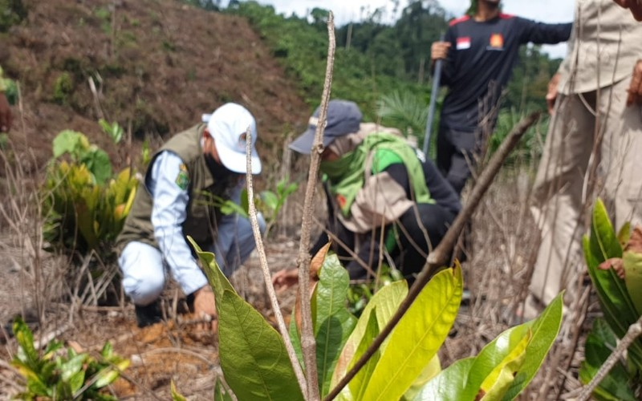
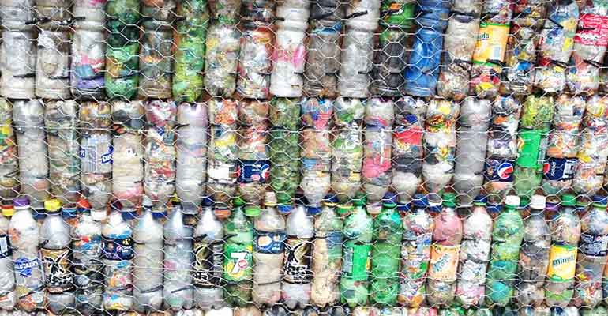

Tips Mengurangi Sampah Sehari-hari
Kehidupan sehari - hari kamu pasti tidak luput dari penggunaan sampah . . .

Giat Melakukan Reboisasi
Semakin banyak orang yang membuang sampah di tempat yang tidak semestinya . . .

Olah Sampah Plastik jadi Bata
Sampah plastik yang tidak terkelola dengan baik akan merusak . . .